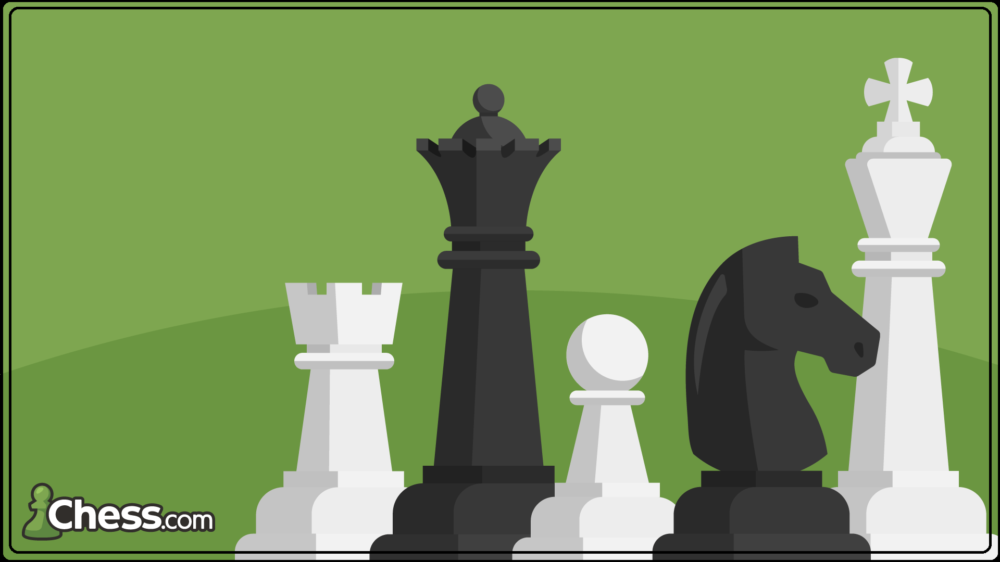
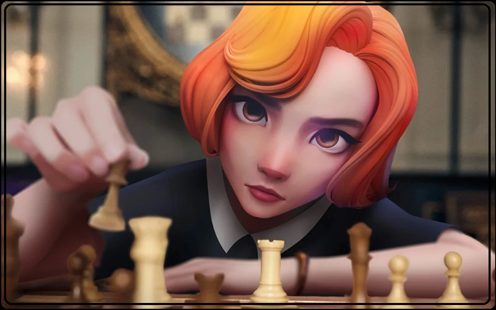
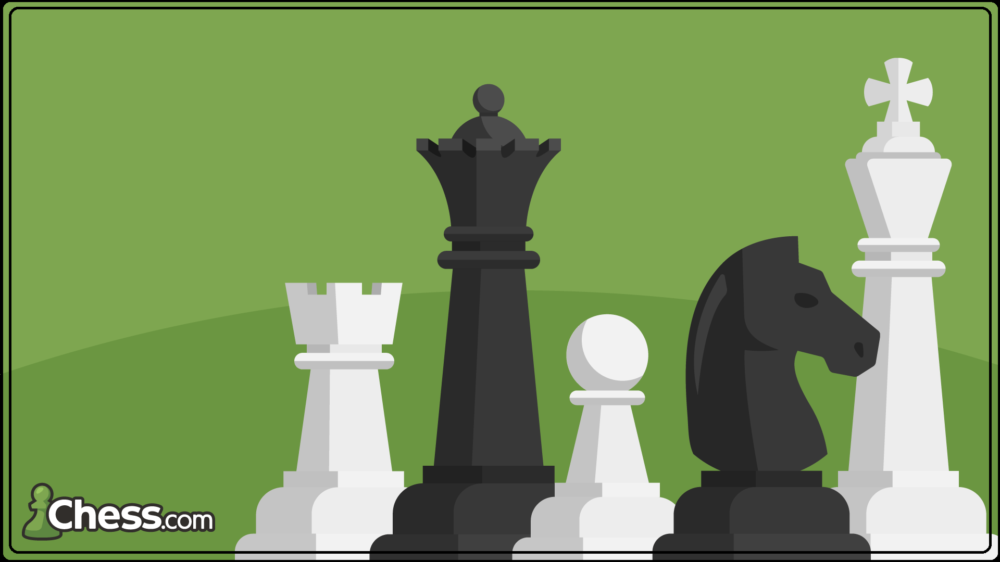
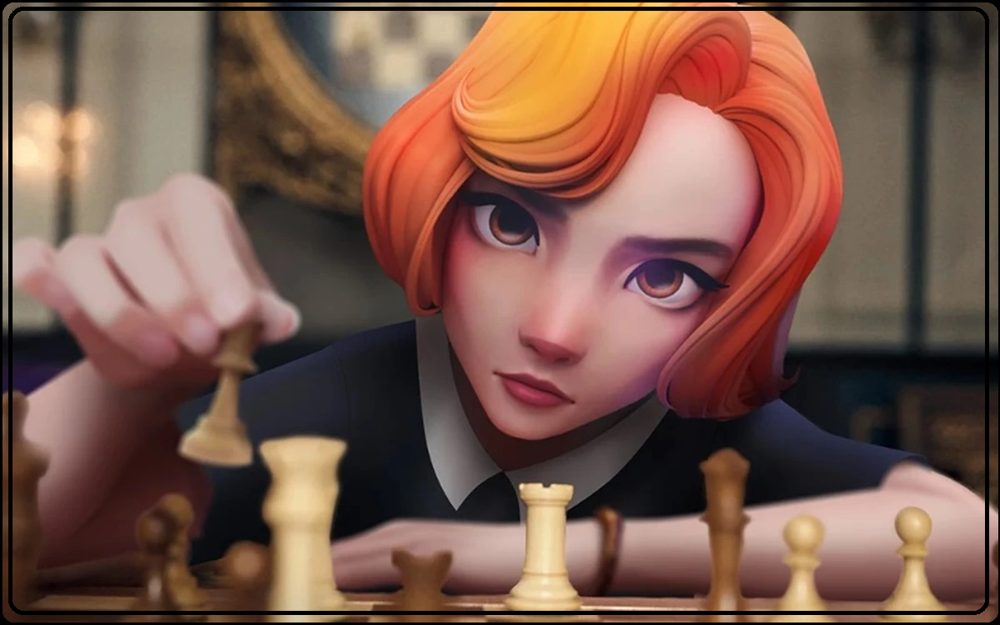

Etapa 1. Como configurar o tabuleiro de xadrez
No início do jogo, o tabuleiro de xadrez é
disposto de forma que cada jogador tenha o quadrado
branco (ou claro) no canto inferior direito.

As peças de xadrez são então organizadas da mesma
maneira todas as vezes. A segunda linha (ou classificação)
é preenchida com peões. As torres vão para os cantos, depois
os cavalos ao lado delas, seguidos pelos bispos, e finalmente
a rainha, que sempre vai na sua própria cor correspondente
(dama branca sobre branca, rainha preta sobre preta),
e o rei nos restantes quadrados.
Ver Mais